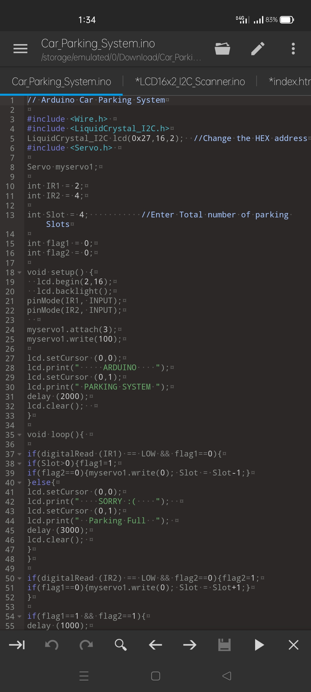
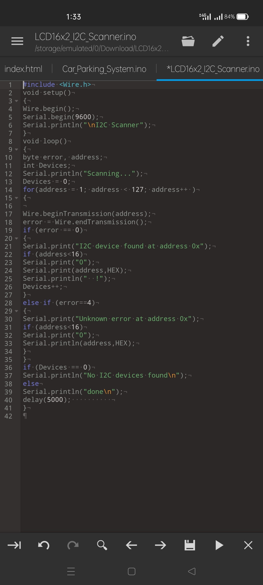
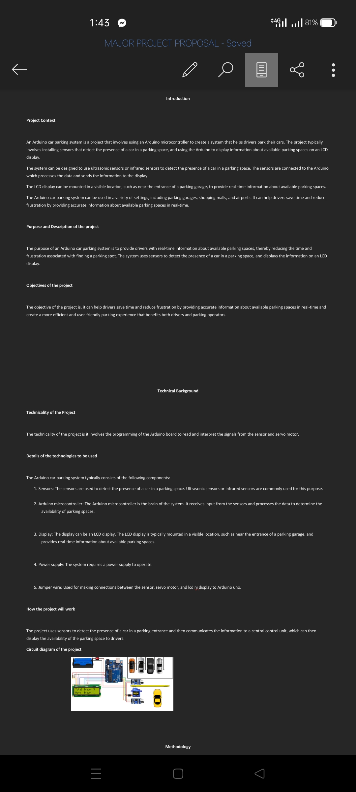

Final Project Progress



The progress of our project is slow but consistent. The progress we make in the past week is only checking our code and continue making our project documentation. In the next week we are planning to buy the materials needed to build our project.